Лиссабон и окрестности
Места, которые стоит посетить
⚠️ Важно: Torre de Belém сейчас на реконструкции — снаружи красиво, но внутрь могут не пустить. Смотровая лифта Санта-Жушта тоже закрыта. Уточняйте перед визитом.
Обязательно к посещению
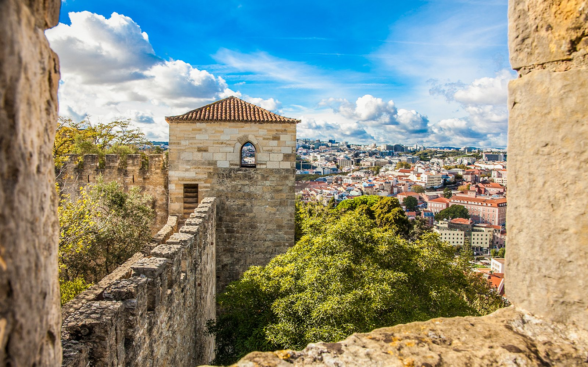
Castelo de São Jorge
Замок на холме с панорамным видом на 360°. Скачайте бесплатный аудиогид. По территории гуляют павлины!
🕘 Ежедневно 9:00–21:00 · ~€15
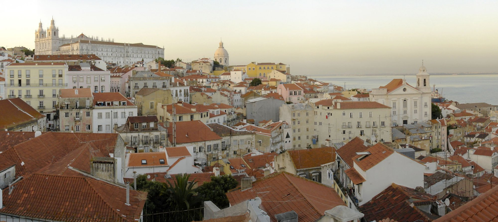
Alfama
Старейший район Лиссабона — просто гуляйте без карты. Мощёные переулки, изразцовые дома, fado из дверных проёмов.
🚶 Просто гулять · Бесплатно

Mosteiro dos Jerónimos
Потрясающая Manueline готика, объект наследия ЮНЕСКО. Бронируйте вход заранее — в мае огромные очереди.
🚫 Закрыт по понедельникам · ~€27 · Бронируйте!
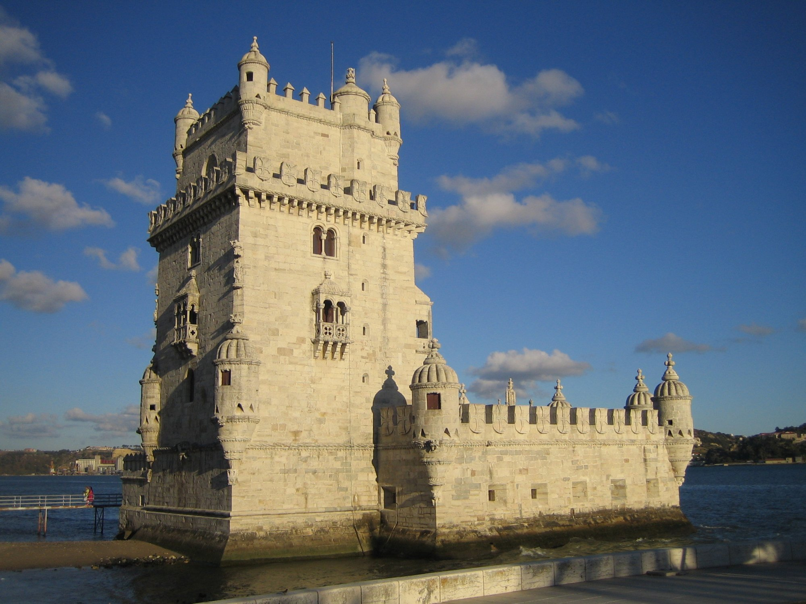
Torre de Belém
Крепость XVI века на берегу Tejo. Сейчас на реконструкции, но набережная и внешний вид — отличные для фото.
📸 Снаружи бесплатно · Внутрь уточняйте
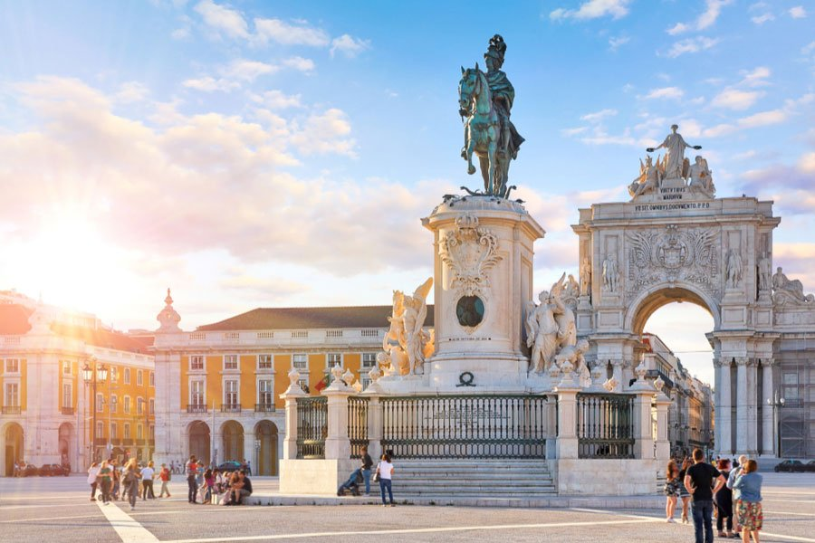
Praça do Comércio
Главная набережная площадь с жёлтыми аркадами и видом на Tejo. Особенно красива на закате. Здесь же Arco da Rua Augusta.
🕐 Открыта круглосуточно · Бесплатно
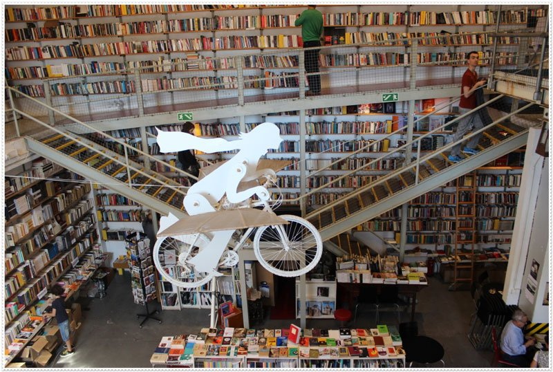
LX Factory
Бывший промышленный комплекс с магазинами, стрит-артом, ресторанами. По субботам лучший рынок.
🕙 Ежедневно с 10:30 · Вход свободный
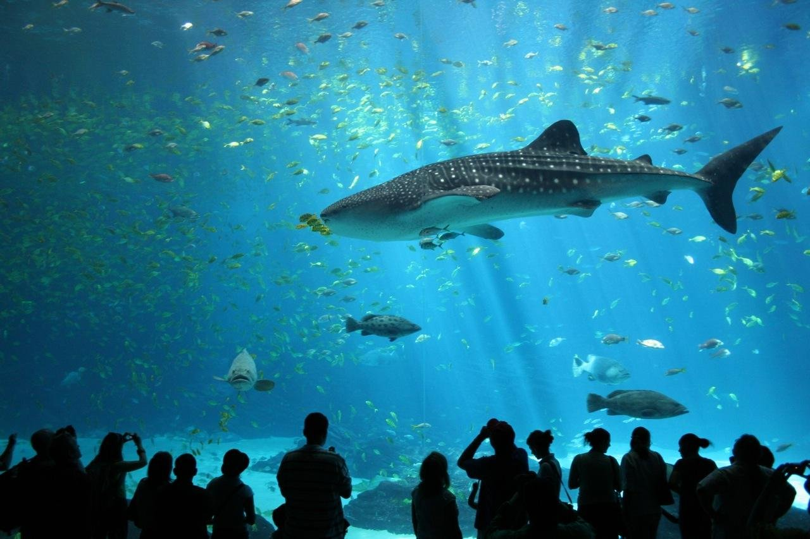
Oceanário de Lisboa
Один из лучших аквариумов в мире. Огромный центральный резервуар, выдры, пингвины, тупики. Минимум 2 часа.
🕙 Ежедневно 10:00–19:00 · €25
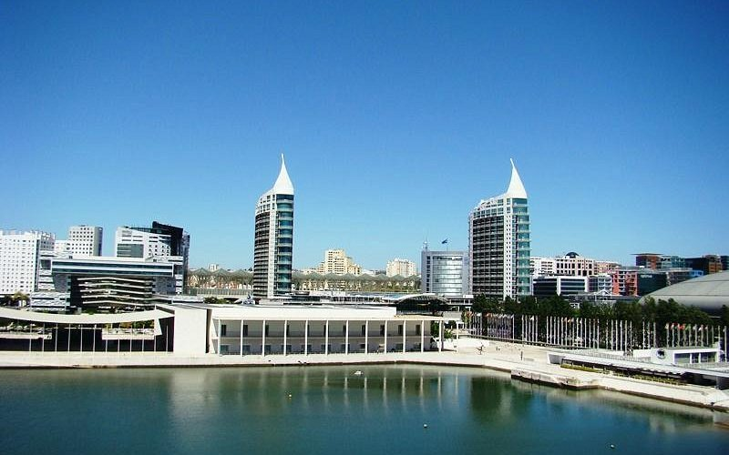
Parque das Nações
Футуристический район Экспо-1998 на берегу Tejo. Необычная архитектура и красивая набережная. Здесь же Oceanário.
🚇 Красная линия метро · Прогулка бесплатна
Скрытые жемчужины
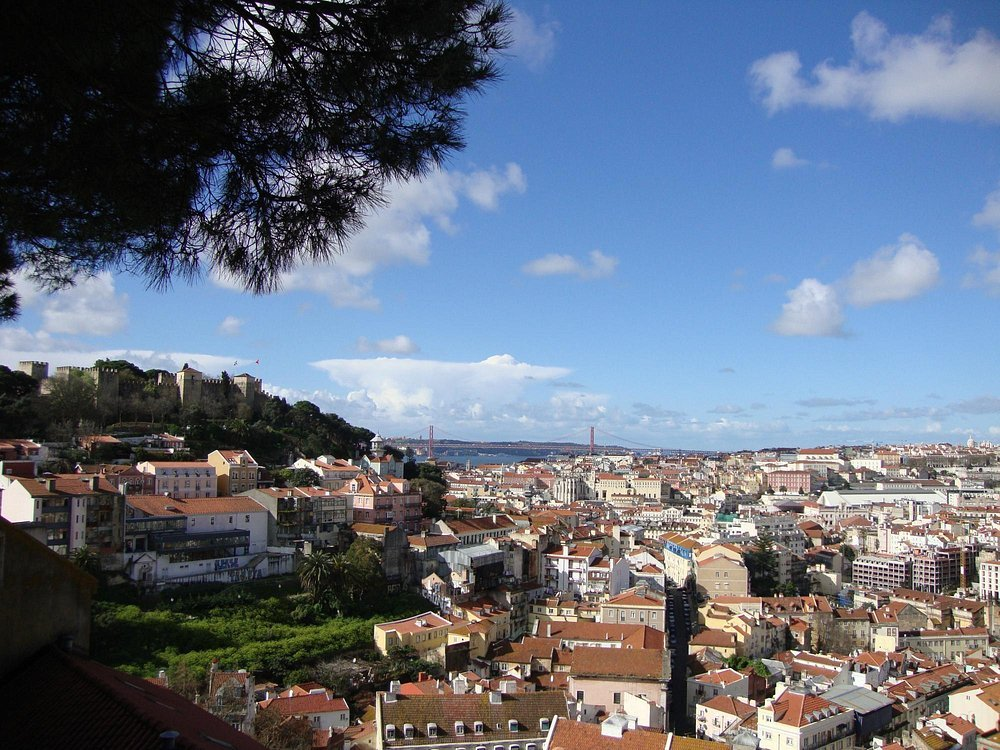
Miradouro da Graça
Лучшая смотровая, о которой большинство туристов не знает. Тише знаменитых, вид на замок — пожалуй, лучший в городе. Есть киоск с пивом.
🕐 Всегда открыто · Бесплатно

Jardim da Estrela
Красивый сад XIX века с прудом, уточками и вековыми деревьями. Совсем не туристическое место — сюда приходят местные. Рядом Базилика Estrela.
🕐 Ежедневно · Бесплатно
Классический Лиссабон
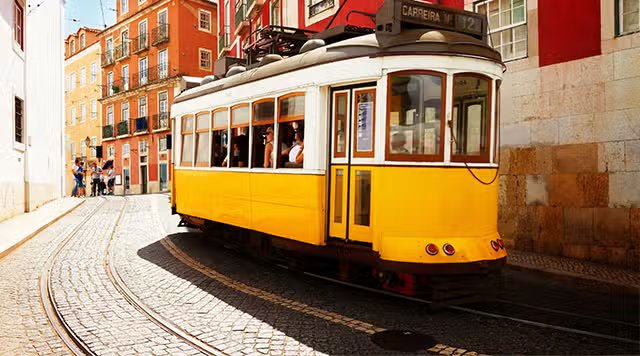
Tram 28
Исторический маршрут через Алфаму и Chiado — дребезжащий, атмосферный. В мае много туристов, езжайте рано утром.
🎫 Включён в проездной Viva Viagem
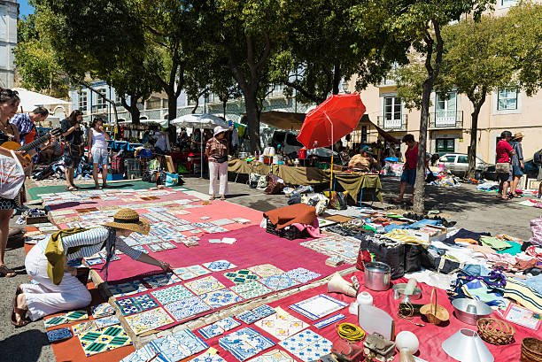
Feira da Ladra
Легендарный блошиный рынок — изразцы, книги, винил, винтаж. Приходите пораньше, торговцы уходят к 14:00. Только наличные!
📅 Вторник и суббота · Только наличные!
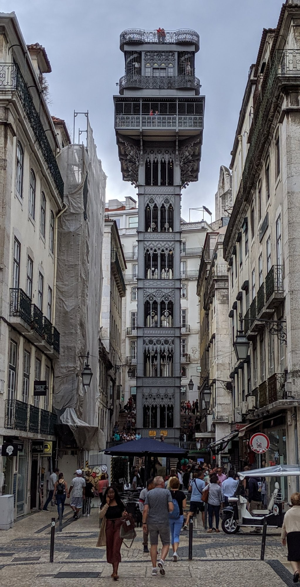
Elevador de Santa Justa
Неоготический чугунный лифт в центре Байши. Смотровая на вершине закрыта на ремонт, но сам лифт работает.
⚠️ Смотровая закрыта · Лифт работает
Исторический центр
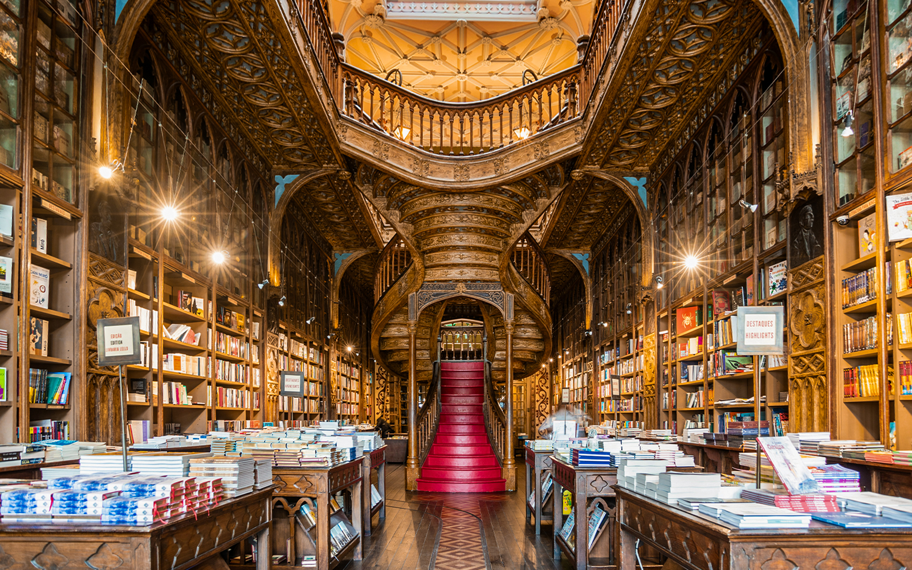
ОбязательноLivraria Lello
Один из красивейших книжных магазинов мира — неоготический интерьер, витражный потолок и знаменитая деревянная лестница. Говорят, вдохновил Роулинг при создании Хогвартса. Покупайте билеты заранее — очереди огромные.
🕘 Пн–Пт 9:00–19:00, Сб–Вс 9:00–19:30 · €12
🎟️ livrarialello.pt — стоимость билета вычитается при покупке книги
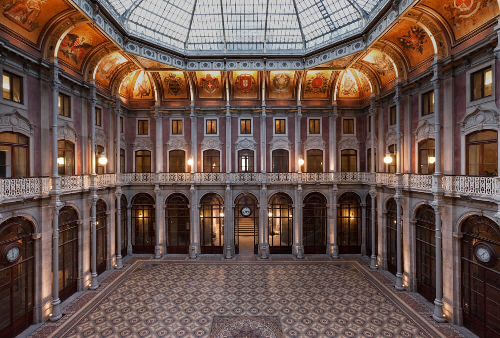
КлассикаPalácio da Bolsa
Дворец биржи XIX века с ошеломительным Арабским залом — золото, лепнина и мавританские арки. Вход только с экскурсией (~30 минут), гиды великолепны. Один из красивейших интерьеров Португалии.
🕘 Ежедневно 9:00–18:30 · €14
🎟️ palaciodabolsa.pt · Экскурсии на португальском и английском
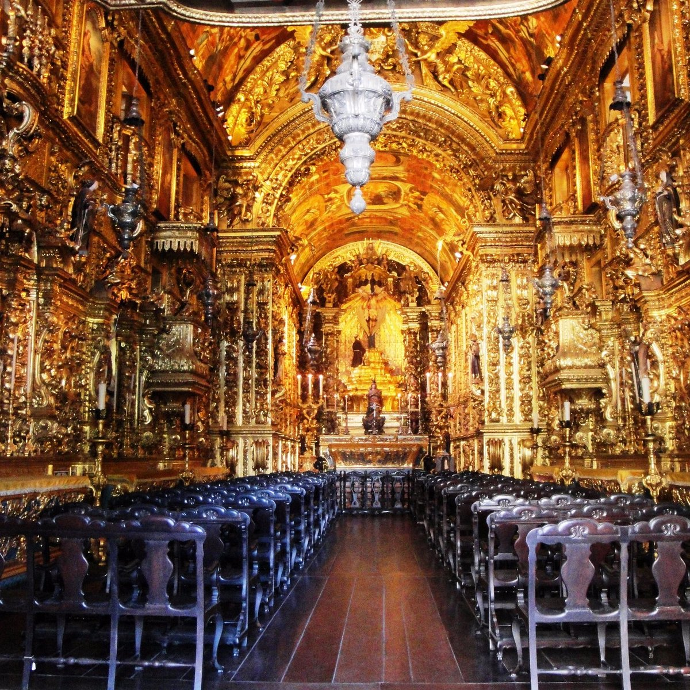
ПотрясаетIgreja de São Francisco
Готическая церковь XIV века с интерьером, покрытым 200 кг золота — барочная резьба сплошь закрывает стены, колонны и потолок. Одно из самых впечатляющих религиозных пространств в Европе. В подвале — оссуарий.
🕘 Ежедневно 9:00–18:00 (летом до 19:00) · €10
🎟️ Касса на месте · Удобно совместить с Palácio da Bolsa
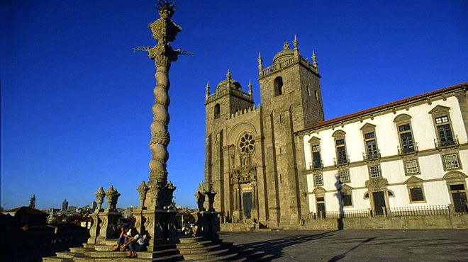
КлассикаSé do Porto
Романский кафедральный собор XII века — старейшее здание города. Строгий фасад скрывает красивый клуатр с азулежу. С террасы — вид на старый город и реку. Рядом — смотровая площадка Terreiro da Sé.
🕘 Пн–Сб 9:00–18:30, Вс 9:00–12:00 и 14:30–18:30
💰 Собор бесплатно · Клуатр €3 · Касса на месте
Смотровые
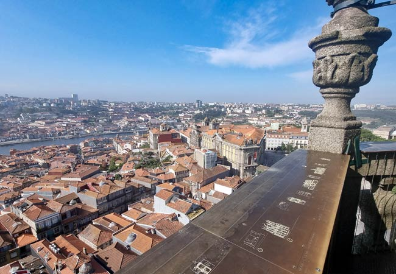
Лучший видTorre dos Clérigos
Барочная башня XVIII века — 76 м и 240 ступеней вверх. С вершины лучшая панорама Порту: красные крыши, река Douro, мост Луиша I и океан на горизонте. Рядом — красивая церковь того же ансамбля.
🕘 Ежедневно 9:00–19:00 · Башня + церковь €8
🎟️ Касса на месте · Вечером очереди меньше
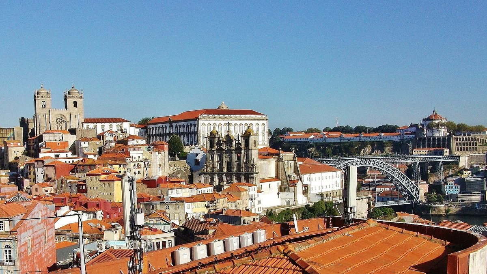
БесплатноMiradouro da Vitória
Уютная смотровая в жилом квартале — вид на мост Луиша I и Гайю с другого ракурса. Местные приходят сюда с вином на закате. Без туристов и без очередей. В двух шагах — бары Bairro da Vitória.
🕐 Всегда открыто · Бесплатно
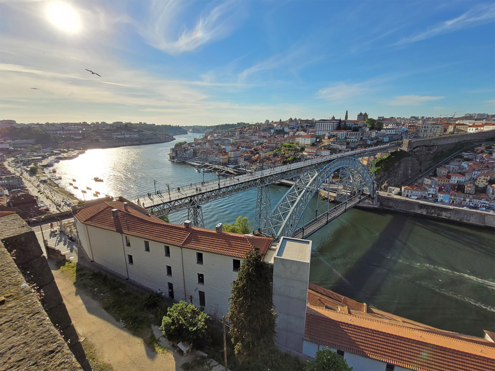
ПанорамаMiradouro da Serra do Pilar
Смотровая на стороне Гайи у монастыря Serra do Pilar — 180° вид на Порту, мост Луиша I и реку. Лучшая точка для фото города. Сюда выходит верхний уровень моста после пешего перехода.
🕐 Всегда открыто · Бесплатно
💡 Переходите мост Луиша I пешком — смотровая сразу справа
Мосты
 Обязательно
ОбязательноPonte Dom Luís I
Двухуровневый железный мост 1886 года — символ Порту. По верхнему уровню (60 м над водой) ходит метро и пешеходы — вид захватывает дух. По нижнему — машины и пешеходы. Переход занимает ~15 минут.
🕐 Всегда открыто · Бесплатно для пешеходов
💡 Идите по верхнему уровню — незабываемо
 Инженерия
ИнженерияPonte da Arrábida
Грандиозный бетонный арочный мост 1963 года — при строительстве был крупнейшим в мире. Соединяет Порту с Гайей ближе к океану. Красив с воды и с набережной Foz do Douro. Туристов здесь почти нет.
🕐 Всегда открыто · Бесплатно
💡 Лучший вид — с набережной со стороны Foz
Ribeira и Gaia
 Обязательно
ОбязательноRibeira
Исторический речной квартал — разноцветные фасады, брусчатка, кафе под открытым небом и вид на мост Луиша I. Включена в список Всемирного наследия ЮНЕСКО. Особенно красива на закате и ночью.
🕐 Всегда открыто · Бесплатно
 Портвейн
ПортвейнVila Nova de Gaia
Другой берег Douro — десятки погребов портвейна: Graham's, Sandeman, Taylor's, Ferreira. В каждом — экскурсия и дегустация. Смотровая Gaia даёт лучший вид на Рибейру. Переходите по мосту Луиша I пешком.
🕘 Большинство погребов 9:30–18:00 · Дегустация €10–25
🎟️ Бронируйте через сайт выбранного погреба заранее
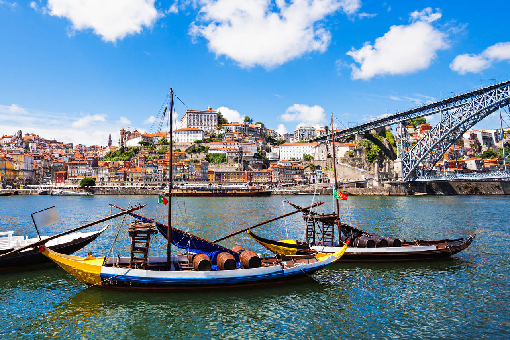
На водеPasseio de Barco Rabelo
Традиционные деревянные лодки, на которых раньше перевозили бочки портвейна по Douro. Сейчас — туристические прогулки ~50 минут под всеми мостами Порту. Отправление с набережной Ribeira и Gaia.
🕘 Ежедневно 10:00–18:00 · ~€15 с человека
🎟️ Билеты у причала · Бронирование не нужно
Районы
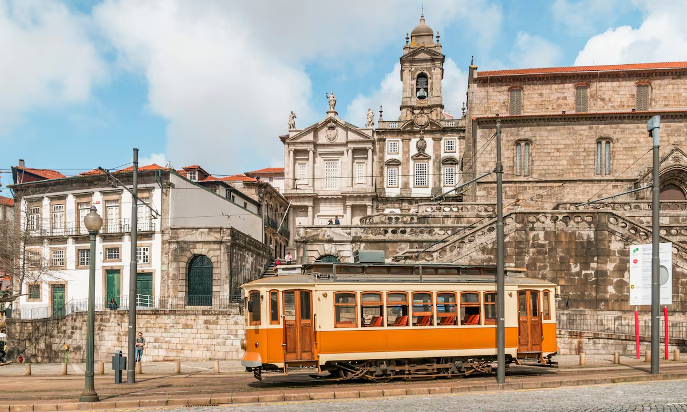
ЛокальныйBonfim
Самый модный район Порту — стрит-арт, независимые кофейни, книжные и шоурумы местных дизайнеров. Здесь живут художники и молодые профессионалы. Прогулка по Rua de Entreparedes и Rua do Bonfim обязательна.
🕐 Всегда открыто · Бесплатно
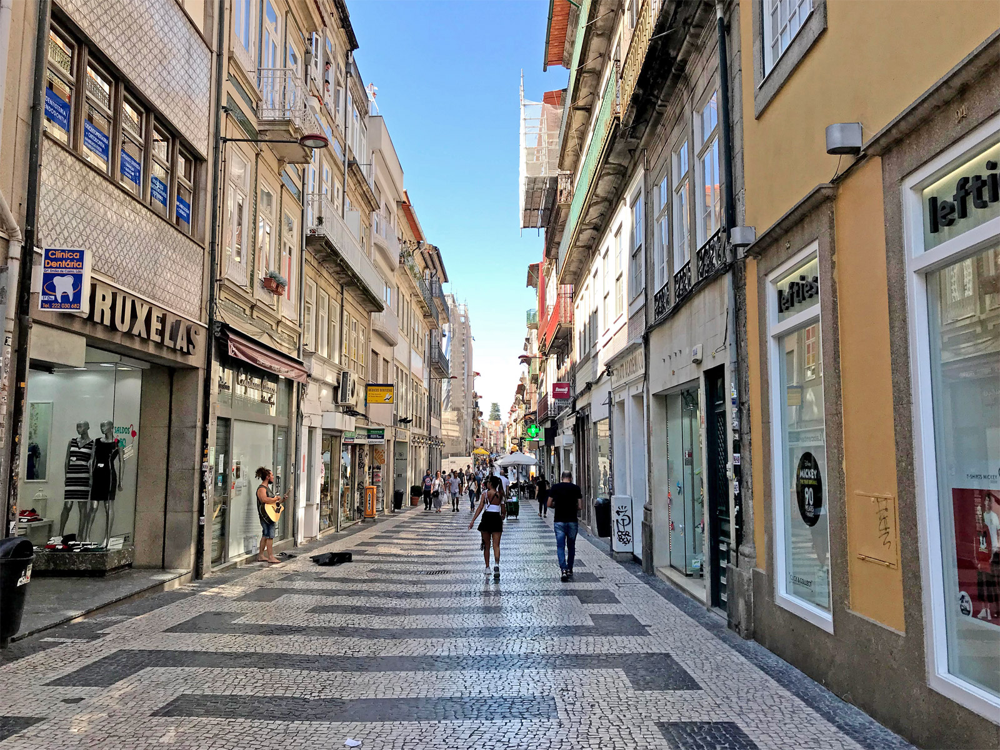
БогемныйCedofeita
Богемный квартал с галереями, антикварными лавками и лучшими барами города. Rua de Cedofeita — главная артерия: здесь можно провести целый вечер, переходя из бара в бар. Живая музыка по пятницам и субботам.
🕐 Всегда открыто · Бесплатно
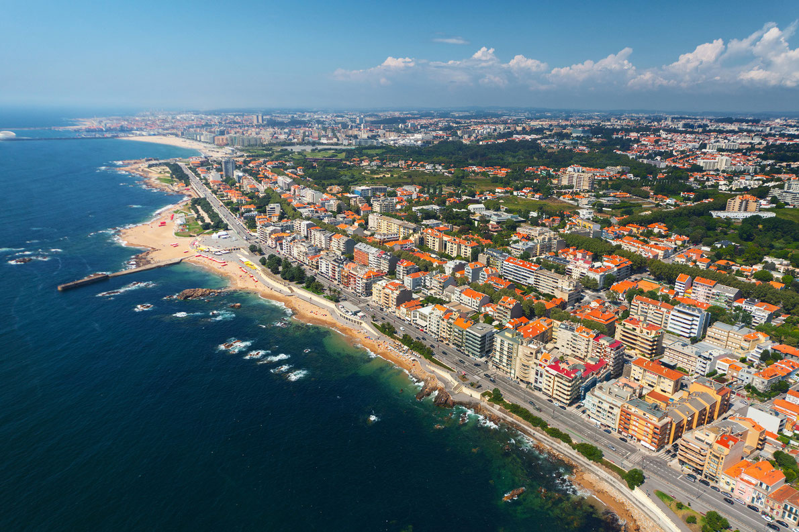
У океанаFoz do Douro
Район у слияния Douro с Атлантикой — скалы, маяк, роскошные особняки и пляж. Идеально для вечерней прогулки вдоль набережной. Трамвай №1 от Ribeira — 20 минут. Лучший закат в Порту.
🕐 Всегда открыто · Бесплатно
💡 Трамвай №1 от Infante — €3.50 в одну сторону
Скрытые жемчужины
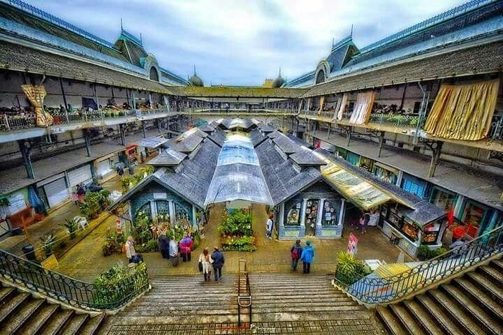
РынокMercado do Bolhão
Исторический крытый рынок XIX века после реставрации — свежая рыба, мясо, сыры, цветы и местная еда. Атмосфера настоящего португальского рынка. Поешьте здесь — дешевле и вкуснее туристических ресторанов.
🕘 Пн–Пт 8:00–20:00, Сб 8:00–17:00 · Вход бесплатный
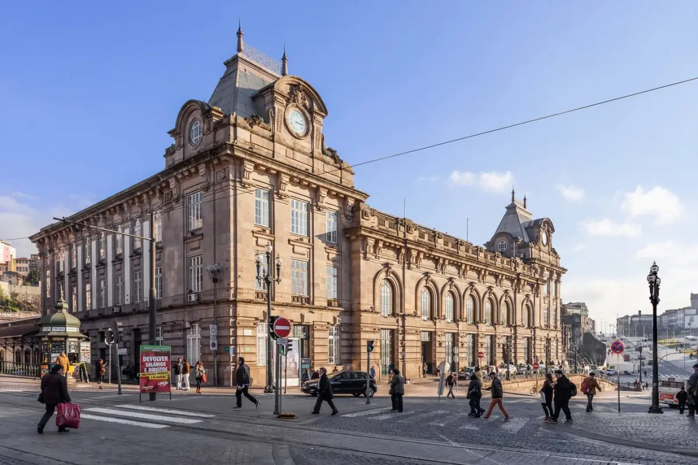
ЖемчужинаEstação de São Bento
Железнодорожный вокзал начала XX века — внутри 20 000 азулежу с историей Португалии. Один из красивейших вокзалов мира. Вход свободный — зайдите посмотреть, даже если не едете на поезде.
🕘 Ежедневно 8:00–23:00 · Вход бесплатный
 Жемчужина
ЖемчужинаCapela das Almas
Часовня XVIII века, полностью облицованная синими азулежу снаружи — 15 947 плиток с житием святых. Один из лучших примеров португальской плиточной живописи. Фасад потрясает.
🕘 Пн–Пт 8:00–18:00, Сб 9:00–18:00, Вс 10:00–18:00 · Бесплатно
 Парк
ПаркJardins do Palácio de Cristal
Романтичные сады XIX века с павлинами, фонтанами и видом на реку Douro и Gaia. Идеально для отдыха в середине дня. Туристов здесь немного — приятная альтернатива шумному центру.
🕘 Ежедневно 8:00–21:00 (летом) · Бесплатно
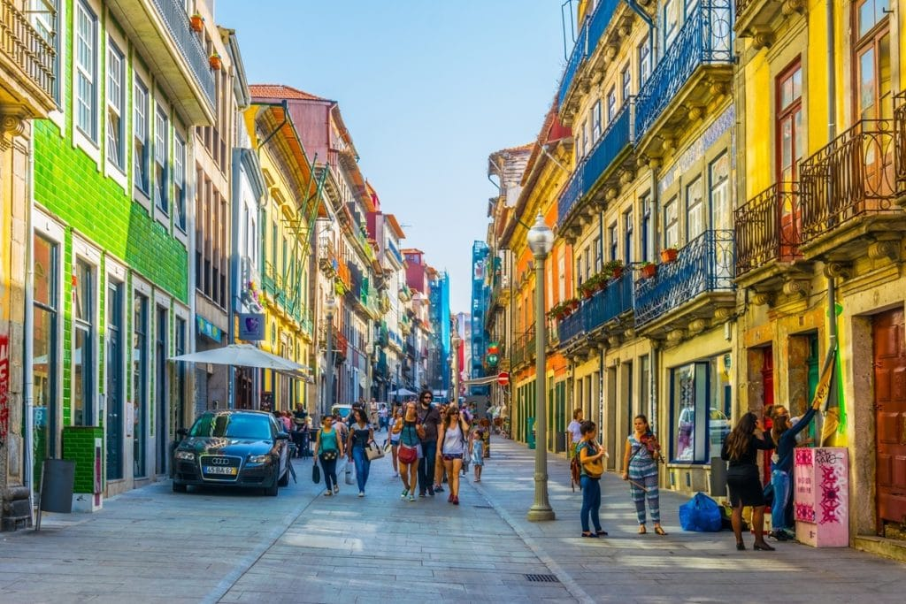
ПрогулкаRua das Flores
Пешеходная улочка в историческом центре с ювелирными мастерскими, кондитерскими и кафе. Отреставрированные фасады с азулежу, живые музыканты. Лучший маршрут от Sé до Ribeira.
🕐 Всегда открыто · Бесплатно
Чуть дальше
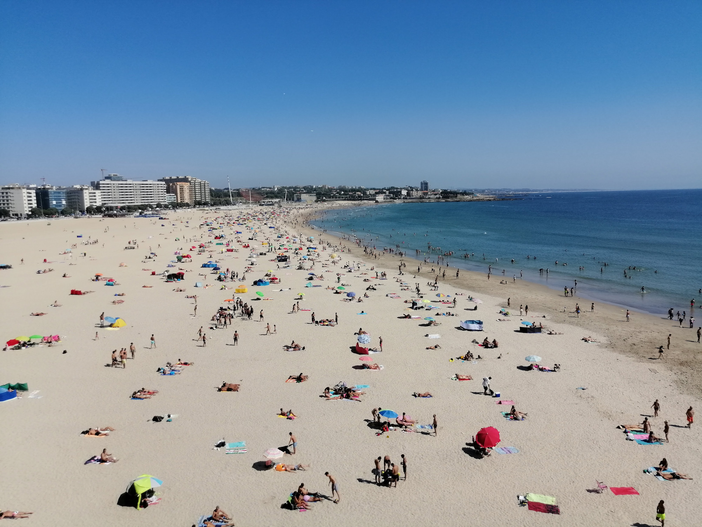
ПляжPraia de Matosinhos
Лучший городской пляж рядом с Порту — широкий, с чистым песком и ресторанами морепродуктов прямо на набережной. Метро линия A до Matosinhos Sul — 20 минут от центра. Рядом — рыбный рынок Lota.
🕐 Всегда открыто · Пляж бесплатно
💡 Метро линия A, €1.85 · Попробуйте grelhado прямо здесь
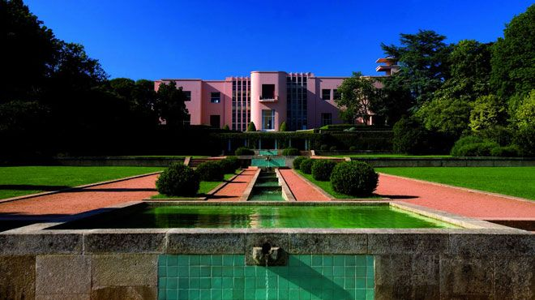
ИскусствоParque Serralves
Выдающийся музей современного искусства архитектора Álvaro Siza Vieira в окружении 18 га садов в стиле ар-деко. Сильные временные выставки. Парк можно посетить отдельно — приятная прогулка.
🕘 Пн–Пт 10:00–19:00, Сб–Вс 10:00–20:00 · Музей + парк €20 · Только парк €5
🎟️ serralves.pt · Автобус №201 от центра
Однодневные поездки
 Венеция Португалии
Венеция ПортугалииAveiro
Очаровательный город с каналами и яркими лодками moliceiro — за это его называют «Португальской Венецией». Попробуйте ovos moles — традиционные сладости из яичного желтка в вафельной оболочке. Красивая архитектура в стиле ар-нуво, соляные поля и лагуна Ria de Aveiro.
🚆 Поезд из Porto Campanħã · ~1 ч · ~€6–10 · Alfa Pendular или региональный
🕐 Прогулка по городу бесплатно · Лодка moliceiro ~€15 · ~3–4 часа на город
Дворцы и замки
 Обязательно
ОбязательноPalácio da Pena
Самый красочный дворец Португалии — жёлто-красные романтические башни на вершине горы в густом лесу. Построен в XIX веке по приказу короля Фернанду II. Внутри — роскошные королевские интерьеры эпохи.
🕘 9:30–19:00 · Дворец + парк €17.50 · Только парк €8
🎟️ Бронируйте на parquesdesintra.pt — в мае очереди огромные!
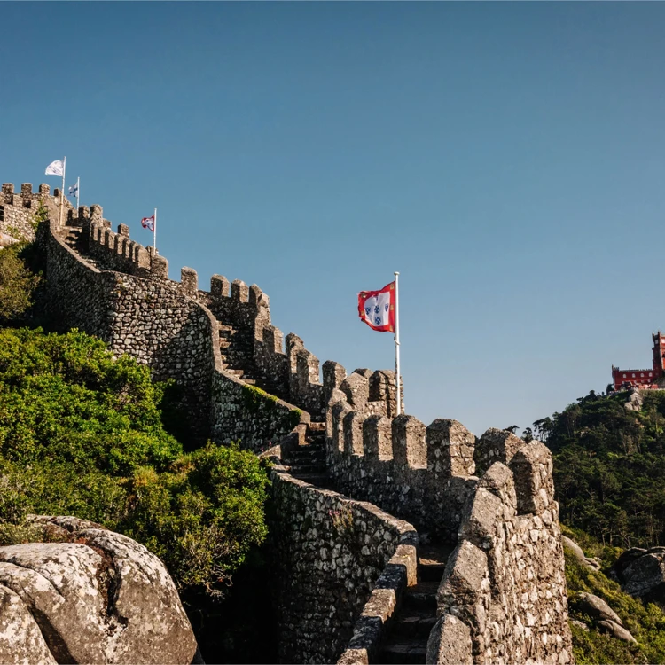
КлассикаCastelo dos Mouros
Мавританские крепостные стены VIII–IX веков, протянувшиеся по гребню скал. Отсюда открывается лучшая панорама Синтры — дворец Пена, леса и полоска океана на горизонте. Можно ходить прямо по стенам.
🕘 9:30–20:00 · €8
🎟️ parquesdesintra.pt · Удобно купить комбо с Пеной
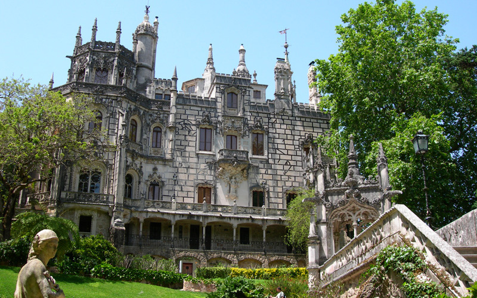
ЖемчужинаQuinta da Regaleira
Таинственная вилла начала XX века с готическими башнями, масонской символикой и знаменитым инициатическим колодцем — по спиральной лестнице спускаешься глубоко в землю. Самое атмосферное место Синтры.
🕘 9:30–20:00 · €15
🎟️ regaleira.pt · Можно купить на входе, но лучше заранее
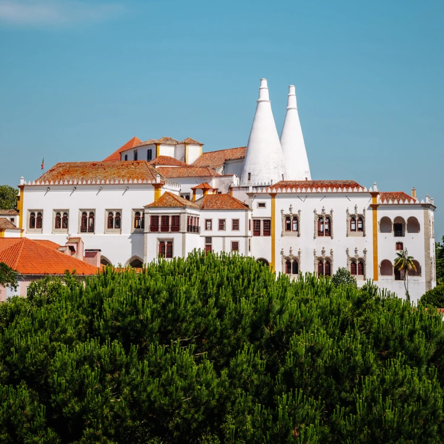
В центреPalácio Nacional de Sintra
Главный королевский дворец прямо в центре города — узнаётся по двум огромным коническим трубам кухни. Один из лучших сохранившихся средневековых дворцов Португалии с мавританскими и мануэлинскими интерьерами.
🕘 9:30–19:00 · €10
🎟️ parquesdesintra.pt · Можно купить на месте
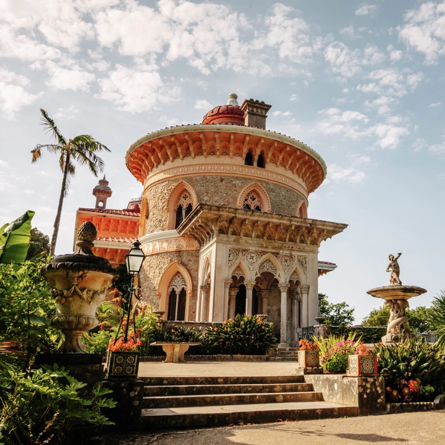
СкрытыйPalácio de Monserrate
Романтичный дворец в мавританско-готическом стиле, окружённый огромным ботаническим парком с растениями со всего мира. Значительно тише, чем Пена — толпы сюда почти не доходят. Отличное место для неспешной прогулки.
🕘 9:30–19:00 · €8
🎟️ parquesdesintra.pt · Обычно без очереди
Природа и еда
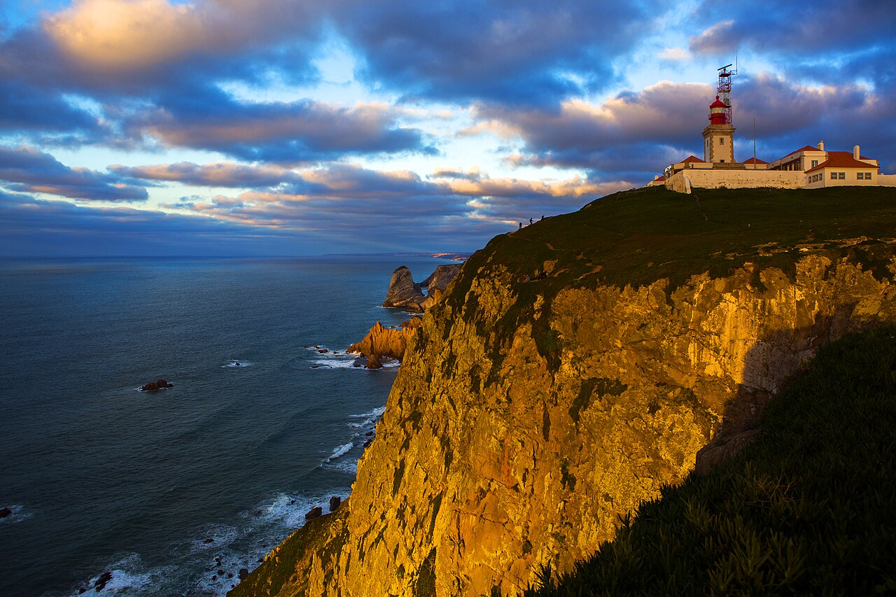
Конец светаCabo da Roca
Самая западная точка континентальной Европы — скалы высотой 140 м над Атлантикой. Маяк, крест и бескрайний океан. Из Синтры автобус №403 (~35 мин, ~€2.55 в одну сторону). Удобный маршрут: Sintra → Cabo da Roca → Cascais автобусом → Лиссабон электричкой.
🕘 Всегда открыто · Вход бесплатный
🎟️ Сертификат «конца света» ~€12 — в туристическом центре на месте
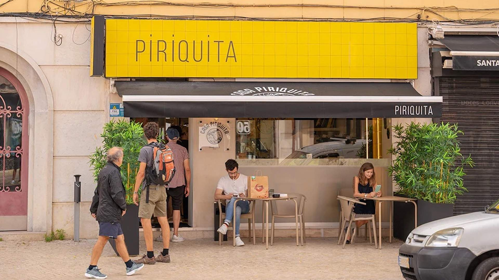
С 1862 годаCasa Piriquita
Легендарная кондитерская — родина Travesseiro de Sintra (слоёное тесто с миндальным кремом) и queijada (сырный тарт). Берите тёплыми прямо из печи. Очередь на улице — нормальное явление, движется быстро. Закрыта по четвергам.
🕘 8:00–22:00 · Закрыта по четвергам
💰 Travesseiro ~€1.50 · Queijada ~€1.30 · Билеты не нужны